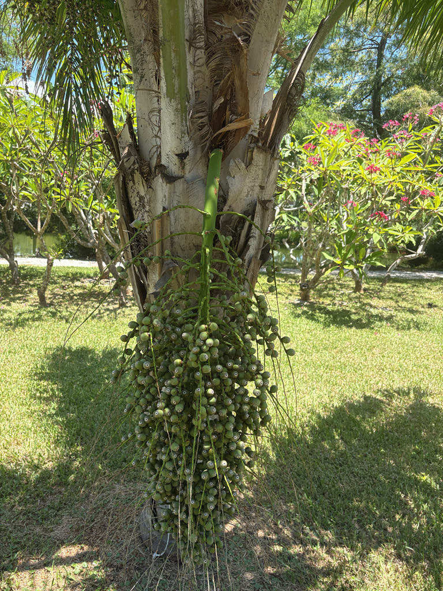

- The licuri (or ouricury) palm nut — this tree's fruit — makes up approximately 95 percent of the entire diet of Lear's Macaw, one of the world's most endangered parrots. By 1990 fewer than 60 birds remained; active conservation of both the macaw and this palm has since brought that count to over 2,500 individuals.
- The leaf bases of this palm attach to the trunk in five distinct spiral rows — a geometric pattern visible even from a distance and unusual enough that it serves as a reliable field mark in its native range.
- Ouricury wax, scraped directly from the leaves, is chemically close enough to the famous carnauba wax to substitute for it in industrial polishes and inks — yet it is far harder to harvest, because it does not flake off the leaf the way carnauba does.
- Local farmers in Brazil treat this palm as a living soil indicator: where it grows naturally, the land is considered fertile.
The Ouricury Palm is native to eastern Brazil, growing through the states of Pernambuco and Bahia and south to the Jequitinhonha River in Minas Gerais. Its home is the Caatinga — a seasonally dry thorn-scrub biome found nowhere else on Earth — and the neighboring Cerrado savanna.
It is among the most abundant palms in all of Brazil; a single population in Bahia has been estimated at half a million individuals.
Despite that abundance at home, it remains uncommon in cultivation outside Brazil. Florida specimens like this one are botanical-garden introductions, valued for their striking trunk architecture and exceptional drought tolerance in subtropical conditions.
- The Ouricury Palm is an extraordinary case study in ecological interdependence. In its native Caatinga, the critically endangered Lear's Macaw (Anodorhynchus leari) depends on this palm's hard, oil-rich kernels for approximately 95 percent of its diet — cracking the tough woody shells with a beak evolved for exactly that task.
- The specimen at Palma Sola Botanical Park carries that conservation story with it.
- Visually, the palm is a study in natural geometry. As each leaf ages and falls, its persistent woody base stays attached to the trunk, locking into one of five distinct spiral rows that wind upward like a loosely twisted rope. This five-ranked spiral (botanists call it quinquefarious phyllotaxy) is rare in palms and serves as an instant field mark.
- The leaves have also long been economically important: their surfaces yield ouricury wax, a hard, high-melting-point substance used in industrial polishes, paper coatings, and cosmetics. The name 'ouricury' itself — also spelled licuri, ouricuri, or aricuri — comes from the Tupi language of Brazil's Indigenous peoples, reflecting centuries of human relationship with this tree.
In its native Caatinga, this palm is a cornerstone food source for a remarkable range of animals. Its nuts are the near-exclusive food of the critically endangered Lear's Macaw, accounting for approximately 95 percent of the bird's diet. Agoutis, peccaries, and several other mammals also depend on the fruit through the dry season, when little else is available.
In Florida cultivation, the wildlife value is more modest but still real. The bright yellow inflorescences attract bees and other pollinating insects, and the fruit — produced over a long portion of the year — can be taken by birds and mammals that encounter it.
It does not serve as a larval host for Florida butterflies or moths, but it contributes shade, structure, and supplemental food to the garden ecosystem.
Bright yellow inflorescences emerge from between the leaf bases (interfoliar), as is typical of Syagrus palms. Both male and female flowers appear on the same tree (monoecious), so a single individual can set fruit without a separate pollen source nearby.
Egg-shaped drupes roughly an inch (2.5 cm) in diameter, produced over a long portion of the year — one of the few palms that can bear fruit in nearly every season. The flesh is fibrous with a mildly sweet flavor and is edible; each fruit contains a single hard seed. The seed kernel is the primary food of Lear's Macaw in Brazil.
Pinnately compound (feather palm), arching and semi-plumose — meaning the leaflets are arranged not strictly in one flat plane but at slightly varying angles, giving the frond a full, brushy appearance rather than a flat paddle. Leaflets are stiff and erect, pale green to slightly bluish-green above and conspicuously whitish beneath.
Petioles carry long, flat, spine-like projections along their margins.
Solitary, reaching roughly one foot in diameter at maturity. The most distinctive feature is the spiral pattern of old leaf-base scars running up the trunk in five distinct rows — a natural geometric texture that sets this species apart from most other feather palms. Unlike crownshaft palms, the fronds emerge directly from the trunk top with no smooth collar between them.
Three features identify this palm from a few feet away. First, look at the trunk: the old leaf bases leave behind a bold diagonal spiral winding upward in five distinct rows — like a loosely twisted rope carved in wood.
Second, look up into the crown: the leaflets stand at slightly different angles rather than lying flat, giving each frond a brushy, three-dimensional fullness (semi-plumose), and their undersides are a pale, almost silvery white most visible when the wind lifts them.
Third, note the open crown top — there is no smooth crownshaft collar between the trunk and the frond bases, which is characteristic of the Syagrus genus. If fruit is present, look for clusters of small egg-shaped drupes hanging just below the frond bases.
The petioles carry long, flat, spine-like projections along their margins — a real physical hazard when working close to the fronds or handling fallen fronds; heavy gloves are strongly recommended when pruning.
The fruit pulp is edible and eaten by people in Brazil, where it is described as fibrous and mildly sweet, and the seed kernel (the licuri nut) is also nutritious and consumed there — but neither is harvested or prepared for consumption here. No toxicity to people, dogs, or cats is documented.
This species is uncommon in Florida cultivation and rare enough in ornamental horticulture generally that visitors are unlikely to encounter it outside a botanical garden setting. Its exceptional drought tolerance makes it well suited to Central Florida's sandy soils and dry summers, provided it is planted in a well-drained spot and not over-irrigated.
Syagrus coronata can hybridize with other Syagrus species; the genus also includes the Queen Palm (Syagrus romanzoffiana), a familiar Florida street tree, making the family connection between this specimen and some of the park's most recognizable palms a useful conversation point for visitors.


- © Randall Carter (CC-BY-NC), via iNaturalist